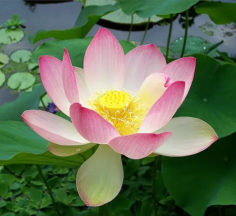

Main course · Popular in Himalaya
Nadru yakhni
Nadru yakhni is made with wild lotus stem & seeds, a favourite in Himalaya.

How do you make nadru yakhni?
Lotus stem in a fennel and dry-ginger yoghurt gravy. Kashmiri.
Wild ingredients
- Lotus stem & seeds (Nelumbo nucifera): in season October to February
Watch the recipe

Video: Times Foodie on YouTube